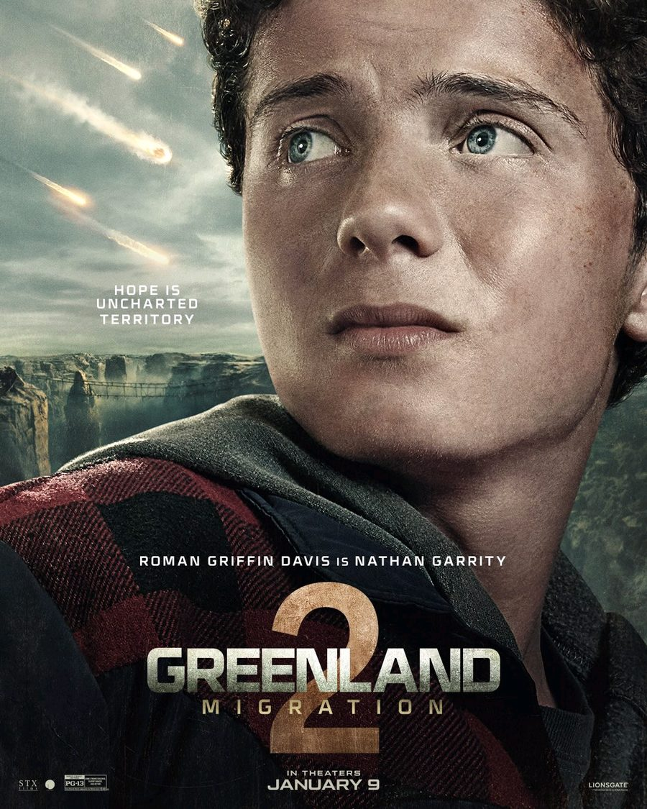
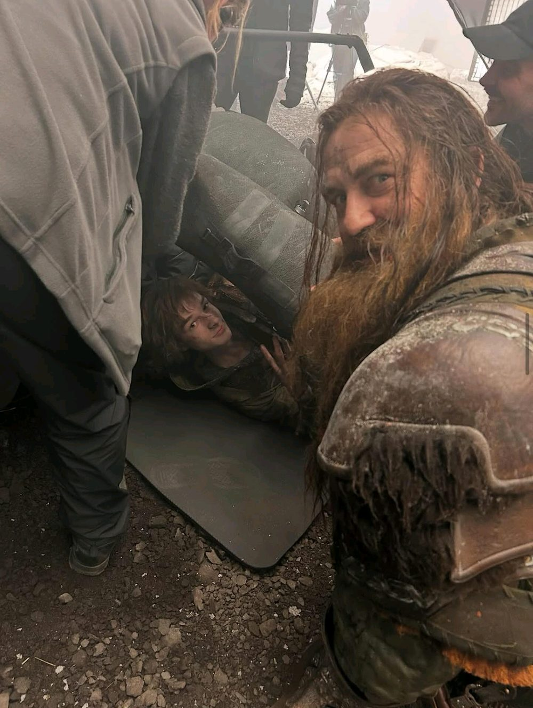

Profile · Actor · Producer
Gerard Butler
Born in Paisley, trained as a lawyer, and now the man you call when a comet is coming or a plane goes down.
Read the profile
Latest
Latest posts
Profile
From law graduate to Hollywood action hero
How a Glasgow law degree, one abrupt career change and a role as a Spartan king shaped one of the most recognizable leads in action cinema.
Film
Greenland 2: Migration, a father on the move
The new character posters, the tagline, and what the sequel's imagery tells us about where the Garrity family is headed.
Features
Six roles that show his range
A king, a phantom, a Viking chief, a presidential bodyguard, a pilot, a romantic lead. One actor, very different jobs.
Timeline
The career in order
Key dates, from Paisley to the Garrity family's second journey.
- 1969
Born on 13 November in Paisley, Scotland.
- 1990s
Studies law at the University of Glasgow, then leaves the legal path just before qualifying and heads for acting.
- 2000
Plays Dracula in Dracula 2000, his first major film lead.
- 2004
Takes the title role in The Phantom of the Opera, singing on screen.
- 2007
300 opens. King Leonidas makes him a global name.
- 2010
Voices Stoick the Vast in How to Train Your Dragon.
- 2013
Olympus Has Fallen launches the Mike Banning series, which continues with London and Angel Has Fallen.
- 2020
Greenland introduces John Garrity and his family.
- 2023
Stars as pilot Brodie Torrance in Plane.
- 2026
Greenland 2: Migration reaches theaters on 9 January.
Filmography
Selected films
A selection of the roles discussed on this site, not a full credit list.
| Year | Film | Role | Type |
|---|---|---|---|
| 2000 | Dracula 2000 | Dracula | Horror |
| 2002 | Reign of Fire | Creedy | Fantasy action |
| 2004 | The Phantom of the Opera | The Phantom | Musical |
| 2007 | 300 | King Leonidas | Historical action |
| 2007 | P.S. I Love You | Gerry | Romantic drama |
| 2009 | The Ugly Truth | Mike Chadway | Romantic comedy |
| 2009 | Law Abiding Citizen | Clyde Shelton | Thriller |
| 2010 | How to Train Your Dragon | Stoick the Vast (voice) | Animation |
| 2013 | Olympus Has Fallen | Mike Banning | Action |
| 2017 | Geostorm | Jake Lawson | Disaster |
| 2020 | Greenland | John Garrity | Disaster |
| 2023 | Plane | Brodie Torrance | Survival action |
| 2026 | Greenland 2: Migration | John Garrity | Disaster |
Greenland 2: Migration
Hope is uncharted territory
Character posters released for the 9 January 2026 theatrical release.


Photo desk
Off-camera moments
Sets are crowded and messy. A snapshot like this one shows the part audiences never see: costumes caked in dust, haze in the air, and a crew working around the cast.